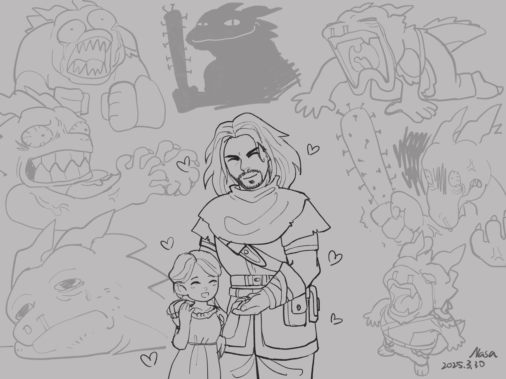

Chapter 2: Banditry is a State of Mind
Storm of Mudtown

Storm of Mudtown
15049.03.23
距離 Connie 與冒險者們說好的午夜還有很長的時間，冒險者們思索著該如何妥善利用。在阿龍的帶領下，大家先到了城內的雜貨店，進行補給。阿龍買了一些釘子，以預備上山後和山賊們的戰鬥。其他冒險者們也進行了簡單的補給。
雜貨店內沒有阿龍想買的藥水，因此大家就到了隔壁的藥品店。然而因為藥水的要價不菲，大家決定作罷。毛毛的神色卻有些不自然，似乎是趁著老闆不注意時，幹了什麼勾當。
離開藥品店後，冒險者們決定分頭進行。雷亞看見了阿龍買的釘子，腦中冒出了些點子，因此動身前往附近的樹林，找尋他眼中合適的樹枝；鑰和毛毛先返回渡鴉中樞見見阿龍的父母，順便簡單休息；羅羅去了趟武器行，買了一把輕弩和一組箭。不久後，雷亞將樹枝帶回，和阿龍要了釘子後，便簡單的手工做了一把釘頭錘，雖然沒有像武器行那麼穩固，不過還算堪用。
接近傍晚，冒險者們都已回到了他們在渡鴉中樞三樓的客房。大家各自取了晚餐，阿龍也特別為 Green 準備了一份。接著大家便一起走到了二樓的 Riley 和 Green 的辦公室。
此時冒險者們只見 Green 一人獨自在辦公室內。阿龍將晚餐遞給 Green 以釋出善意，同時大家也和 Green 詢問著稍晚上山「剿匪」的計劃。他們這才發現，Green 從來沒有跟隨 Connie 或春天精靈上山過。起初，Green 對於上山這一件事，也沒有多大的興趣，但在冒險者們的請求下，他才勉為其難的答應。同時，Riley 正好回到辦公室，也答應了讓 Green 一起上山的計劃。
不過，由於冒險者們需要在午夜時和 Connie 等人集合，雖然此時才剛日落左右，也得先休息了，以免精神不濟。
門口傳來叩叩叩的敲門聲。Riley 在完成公務後，一一朝冒險者們的房間敲門，提醒他們起床準備。
冒險者們帶著與山賊奮戰的心，來到二樓與 Green 會合。大家一起走向與 Connie 說好的集合地點—議會門口。然而，此時冒險者們看到的就只有提前抵達，正在玩鬧的「壞四人」。
阿龍試著和壞四人溝通，要他們安靜點，不要吵到其他居民，但他很快地發現壞四人和他離開村莊前相比，沒有什麼長進，根本難以溝通。甚至稍早他手動洗過的 Pibble 身上的味道早已恢復成原本的狀態了。
不久後，遠方傳來兩人的腳步聲。毛毛雨下，Connie 撐著傘，傘下的 Penny 踏著輕快的步伐，高聲朝著大家打招呼。雖然面對 Penny 的情緒已變得有些扭曲，阿龍還是挺開心的。
Connie 看見初次加入隊伍的 Green，有些困惑，但在 Penny 認為沒有妨礙的前提下，也就讓 Green 同行了。
15049.03.24
午夜，春天精靈與他的春天騎士團們出發，前往海雅特山，準備去見名為「海雅特山交響樂」的山賊。
路程中，壞四人聒噪又忍人厭的各種胡鬧，讓阿龍看了很不開心，內心也質問著「到底 Penny 為什麼會把這些人要召進他的春天騎士團內？」但當然，他也沒有得到答案。
早餐與午餐都在路邊簡單用過後，日落前，春天騎士團終於來到了海雅特山交響樂的領地口。Connie 提醒大家，要大家不要招惹山賊，如果他們不讓大家進去，也不要強迫闖入。這讓大家也感到有些困惑—既然大家是要去與山賊交戰，還談什麼禮節呢？
領地口兩根高聳的樹幹前，各站了一名山賊，而其中一名很顯然的就是 Big Os 了，Penny 一見到他，彷彿身體沒有任何不適，快速地衝了上去抱緊他。看在阿龍眼裡，格外眼紅。
Penny 請求 Big Os 讓他的春天騎士團一起進入領地內，而 Big Os 看了看所有來訪的人們，最終決定，除了「議會的走狗」 Connie 外，其他人都可以進去。對於第一次來就能輕鬆進去的 Green，Connie 很不是滋味，他試圖與山賊們溝通，卻只迎來 Big Os 呼喚一名女性山賊同胞將 Connie 接到領地口外的帳篷休息區。
隨著 Connie 消失在視野外，Big Os 和他的夥伴像是鬆了一口氣般，卸下了嚴肅的神情，嬉鬧著、笑著，迎接春天騎士團們一起走入領地。他招呼著大家，關心著大家是否肚子餓了還沒吃晚餐？接著帶著大家朝著領地中心走去。大家詫異著，這群「山賊」竟然毫無惡意，還如此友善，與土城內大家描述的「收取過路費的惡霸」完全不一樣。Big Os 也笑著說，這就是為何不讓 Connie 進來的原因—不能讓議會知道真相。冒險者們似懂非懂，但對於「討伐山賊」這件事，也更沒有把握了。
一路上，Big Os 快速地向他們介紹，他們有自己的農場、牧場、餐廳、酒館，可以說是自給自足，比起山賊的營地，更像是個小型的聚落。來到中央的廣場，幾名山賊正用木柴搭建起一座營火，Big Os 示意大家先坐下來休息，他也和 Penny 找了個角落坐了下來，看得阿龍又眼紅了。
一名山賊彈奏著魯特琴，一名則身著類似 Nessis 風格的教袍，像個牧師一樣，還有一名山賊遞了酒給大家喝。冒險者們與山賊們漸漸開啟了溝通。雷亞和牧師習得了許多他不知道的關於 Nessis 的教義；鑰也和當地的「財務官」山賊拿到了他們詳盡的收支記錄，發現從土城徵收的錢，除了部分繳交給他們的上級組織外，其他幾乎都是拿來買作物或和附近的聚落打交道用的。
除此之外，還有一名看起來有點笨拙的新手打鐵匠山賊，十分討冒險者們歡心。
在冒險者們的詢問下，他們得知海雅特山交響樂的上級組織，是自稱「Slashing Symphony 砍殺交響樂」的組織—他們視殺戮為一種美妙的音樂，享受其中。而砍殺交響樂的組織龐大，除了如海雅特山交響樂這種聚於山上的「山賊」外，各大城市內的黑道、黑市等也幾乎都是他們的下線，影響力擴及整個帝國。介於砍殺交響樂與土城之間的海雅特山交響樂則身份尷尬，他們對土城的惡形，幾乎都是基於要交代給砍殺交響樂的目的，要是逃跑，只會被取下人頭拎回來示眾。對此，冒險者們聽了，提供了 Big Os 一些建議，但對 Big Os 來說都不夠好。
在 Penny 的同意下，Big Os 也提出了 Penny 過去的提議：他曾私下和 Big Os 提出私奔的想法，兩人一起逃離這是非之地，換個身份，浪漫的活下去。Penny 認為家人什麽都他都能拋棄，但對於 Big Os 的愛，他放不下。而 Big Os 也因為放不下對他的手下，他的兄弟們的義氣，而無法承諾私奔。
吃飽喝足後，在牧師的引領下，Penny 踏出營火圈，走向營火邊的牧師。儀式就要開始了。
在牧師帶頭吟誦後，Penny 身上的翠綠印記開始發光，而 Penny 則面露難色，但不久後，Penny 的神色開始緩解。冒險者們仔細一看，發現營火圈外的山賊們此時卻直冒冷汗，咬牙切齒—就像是 Penny 身上的痛處，轉移到他們身上去了一樣。這讓冒險者們更困惑了。
儀式結束後，Penny 很明顯的看起來舒服與開心很多。他大聲謝謝牧師與其他山賊後，便快步回到 Big Os 身邊。對此，冒險者們有很多疑惑，便向牧師詢問。牧師表示這個儀式是古老的 Nessis 儀式，用處是分攤痛處，而把他用在春天精靈身上，只是他們的主意罷了，說白了，和砍殺交響樂也沒有什麼關係。Penny 看向冒險者，表示自己說每個月上山很辛苦的部分，其實是爬山的時候，他很感激山賊們為他分攤痛楚。
冒險者們繼續詢問，得知砍殺交響樂會不定期上山來催款，如果沒有繳出應有的款項，就會有人頭落地—就算有繳出，也不保證所有人都能安全活下來。也因此，海雅特山交響樂幾乎每個月都在徵招新人，那名呆呆的新手打鐵匠，就是上個月剛加入的新人。
阿龍的內心很混亂：面對如此難以預測又霸道的上級組織，海雅特山交響樂卻也不逃脫、不反抗；說好上山要剿匪，結果這群山賊竟然是一群請大家喝酒吃肉、唱歌跳舞的山民；還有，Penny 的手什麼時候才要從 Big Os 身上拿下來，不對，他的嘴唇怎麼貼上 Big Os 的臉頰了！？
山賊們向冒險者們介紹了提供給他們過夜的空間：一個人一間獨立的小木屋，讓大家不受打擾。（鑰決定先把毛毛安置在和他相同的房間，以免入夜後阿龍跑去刮毛毛的毛，或是像之前一樣把毛毛當成毛巾來用—而毛毛在營火前，似乎已經從眾山賊們口袋中摸走了不少錢。）
Big Os 也告訴大家，明天早上在大家下山前，可以讓大家參觀一下他們這裡的各個環境。
冒險者們睡前簡單討論了一下明天的計劃：「剿匪」這條路似乎是行不通了，甚至可以說，上山這趟根本就是白費了。要拿到蘋果木，最簡單的做法，似乎還是下山後偷偷潛入 Applewood 家的領地，砍斷蘋果木，讓它從維爾河順流而下，達成 Riley 要的條件。
15049.03.25
醒來後，冒險者們簡單收拾，來到已熄滅的營火前，和山賊拿了早餐。
雷亞在一名曾任警官的山賊的帶領下，到附近的樹林深處，感受 Nessis 的力量。他發現，在這裡，是近期他所能感受最強烈的神性，甚至沒有任何殺戮的痕跡，讓他感到非常平靜。
冒險者們、Green 與壞四人等在 Big Os 的帶領下，走到了領地口，此時 Connie 也在負責他起居的山賊帶領下，與他們會面。Penny 依依不捨地和 Big Os 道別，眾人準備下山。
「—他、他們來了！」一聲喧囂打破 Penny 和 Big Os 的離別之情，也敲醒了阿龍逐漸消去的戰意。